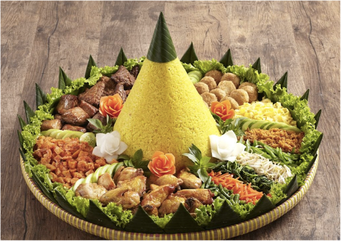
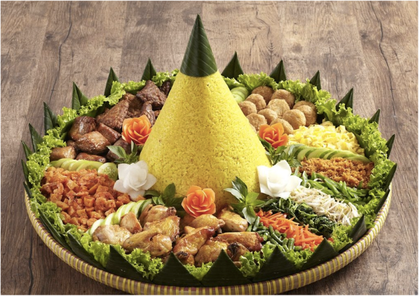
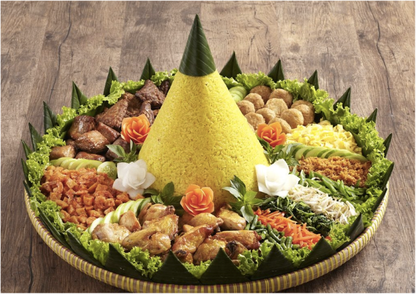

Indonesia, officially the Republic of Indonesia is a country in Southeast Asia and Oceania between the Indian and Pacific oceans. It consists of over 17,000 islands, including Sumatra, Java, Sulawesi, and parts of Borneo and New Guinea. Indonesia is the world's largest archipelagic state and the 14th-largest country by area, at 1,904,569 square kilometres (735,358 square miles). With over 279 million people, Indonesia is the world's fourth-most-populous country and the most populous Muslim-majority country. Java, the world's most populous island, is home to more than half of the country's population.

Indonesia's terrestrial flora can be divided into several vegetation groups. The most important factor is rainfall, followed by temperature, both of which affect the availability of water. The distribution of Indonesian flora is dominated by broadleaf evergreen forests. This is mostly seen in the regions where population density is still relatively low, such as Sumatra, Borneo, Sulawesi and West Papua.
Sundaland, which is located on the west part of the Indonesian archipelago, holds about 25,000 different species of plants. 15,000 of them are endemic to this region and cannot be found anywhere else. Scyphostegiaceae is a plant family represented by a single species, Scyphostegia borneensis, which is endemic to Borneo. Another 155 species of Dipterocarpus are endemic to this island. Borneo also has more than 2,000 species of orchids. The forests in Sumatra include more than 100 species of Dipterocarpus, nearly a dozen of them are endemic to this island. The island of Java has about 270 endemic orchid species. It is home to Mentimun Jaws (Alsomitra macrocarpa) which has gliding seeds At least 117 plant genera are endemic to this biodiversity hotspot. 59 of them are found in Borneo and 17 in Sumatra. Unique plants from this region are similar to ones from the Asian continent, examples include Rafflesia arnoldii, pitcher plants and Javanese Edelweiss (Anaphalis javanica) as examples.

Jakarta officially the Special Capital Region of Jakarta (Indonesian: Daerah Khusus Ibukota Jakarta, abbreviated to DKI Jakarta) and formerly known as Batavia until 1949, is the nation's capital city and the centre of the largest metropolis of Indonesia. Lying on the northwest coast of Java, the world's most populous island, Jakarta is the largest metropole in Southeast Asia, and serves as the diplomatic capital of ASEAN. Jakarta is bordered by two provinces: West Java to the south and east; and (since 2000, when it was separated from West Java) Banten to the west. The Special Capital Region has a status equivalent to that of a province. Its coastline faces the Java Sea to the north, and it shares a maritime border with Lampung to the west. Jakarta's metropolitan area is ASEAN's second largest economy after Singapore.
Indonesian street food is a collection of ready-to-eat meals, snacks, fruits and drinks sold by hawkers or vendors at warung food stalls or food carts. Street food in Indonesia is a diverse mix of local Indonesian, Chinese, and Dutch influences. Indonesian street food are usually cheap, offer a great variety of food of different tastes, and can be found on every corner of the city.